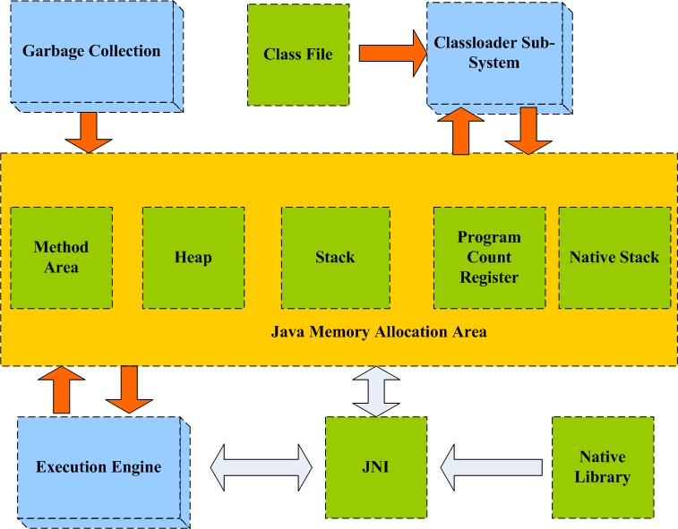
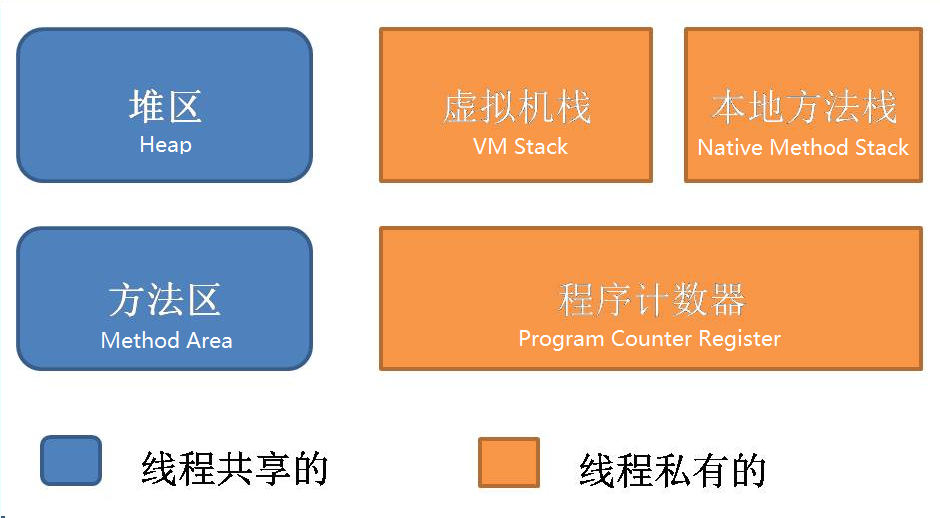
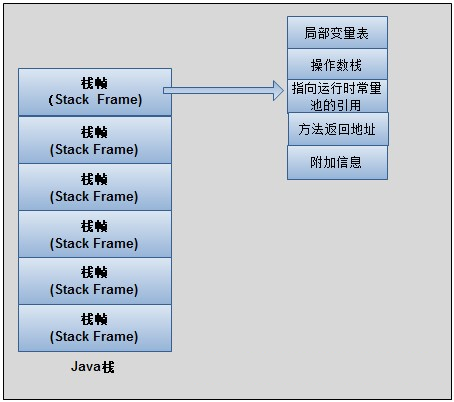
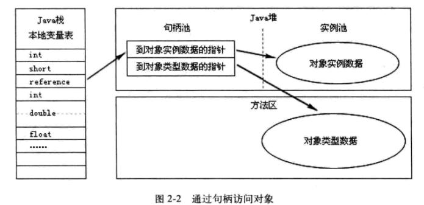
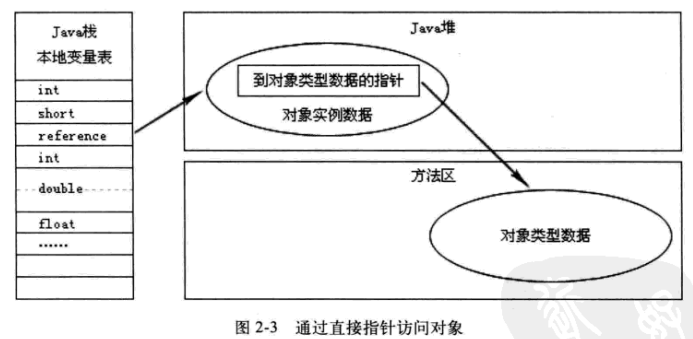

内存区域
根据《Java 虚拟机规范》，运行时数据区通常包括这几个部分：程序计数器、虚拟机栈、本地方法栈、堆区、方法区。

规范中虽然规定了程序在执行期间运行时数据区应该包括这几部分，但是至于具体如何实现并没有做出规定，不同的虚拟机厂商可以有不同的实现方式。
程序计数器（Program Counter Register）
程序计数器是一个比较小的内存区域，作用：指示当前线程所执行的字节码执行到了第几行。字节码解释器在工作时，会通过改变这个计数器的值来取下一条语句指令。
在 JVM 中，多线程是通过线程轮流切换来获得CPU执行时间的，所以在任一具体时刻，一个CPU的内核只会执行一条线程中的指令。为了使得每个线程都在线程切换后能够恢复在切换之前的程序执行位置，每个线程都需要有自己独立的程序计数器，并且不能互相被干扰，否则就会影响到程序的正常执行次序。因此，程序计数器是每个线程所私有的。
- 如果程序执行的是一个 Java 方法，则计数器记录的是正在执行的虚拟机字节码指令地址；
- 如果正在执行的是一个本地（native，由 C 语言编写完成）方法，则计数器的值为 Undefined。
由于程序计数器只是记录当前指令地址，所以不存在内存溢出的情况，因此程序计数器也是所有 JVM 内存区域中唯一一个没有定义 OutOfMemoryError 的区域。
虚拟机栈（JVM Stack）
虚拟机栈是 Java 方法执行的内存模型
当线程执行一个方法时，就会创建一个相应的栈帧（Statck Frame），并将建立的栈帧压栈，当方法执行完后，便会将栈帧出栈。
栈帧中存储了局部变量表（Local Variables）、操作数栈（Operand Stack）、动态链接、方法返回地址（Return Address）等。

局部变量表中存储着方法的相关局部变量（包括在方法中声明的非静态变量以及函数形参）。基本类型中只有 long 和 double 类型会占用2个局部变量空间（Slot，对于32位机器，1 Slot = 32 bit），其它都是1个局部变量空间。
注：局部变量表在编译时就已确定，方法运行所需要分配的空间在栈帧中是完全确定的，在方法的生命周期内都不会改变。
虚拟机栈中定义了两种异常：
- 栈溢出（StatckOverFlowError）：如果线程调用的栈深度大于虚拟机允许的最大深度，则抛出；
- 内存溢出（OutOfMemoryError）：多数 JVM 允许动态扩展虚拟机栈的大小，如果线程一直申请栈，直到内存不足，则抛出。
每个线程对应着一个虚拟机栈，因此虚拟机栈也是线程私有的。
本地方法栈（Native Method Statck）
本地方法栈在作用，运行机制，异常类型等方面都与虚拟机栈相同。
唯一区别：虚拟机栈用于执行 Java 方法；本地方法栈用于执行本地方法（Native Method）。
在规范中并没有对本地方法栈的具体实现方法以及数据结构作强制规定，虚拟机可以自由实现它。比如 Sun 的 JDK 默认的 HotSpot 虚拟机就直接把本地方法栈与虚拟机栈放在一起使用。
本地方法栈也是线程私有的。
堆区（Heap）
堆区是理解 GC 机制最重要的区域。在 JVM 所管理的内存中，堆区最大，是 GC 机制所管理的主要内存区域，堆区由所有线程共享，在虚拟机启动时创建。堆区的存在是为了存储对象实例，原则上讲，所有的对象以及数组都在堆区上分配内存（当然也有栈上直接分配的）。
根据 JVM 规范，堆内存需要在逻辑上是连续的（在物理上不需要），在实现时，可以是固定大小的，也可以是可扩展的，目前主流的虚拟机都是可扩展的。如果在执行垃圾回收之后，仍然没有足够的内存可分配，也不能进行扩展，将会抛出 OutOfMemoryError:Java heap space 异常。
堆是被所有线程共享的，在 JVM 中只有一个堆。
方法区（Method Area）
方法区在 JVM 中也是一个非常重要的区域，它与堆一样，是被线程共享的区域。
在 JVM 规范中，没有强制要求方法区必须实现垃圾回收。很多人习惯将方法区称为“永久代”，是因为 HotSpot 虚拟机将分代收集的思想扩展到了方法区，并将方法区设计成了永久代，从而 JVM 的垃圾收集器可以像管理堆区一样管理这部分区域。但实际上，方法区并不是堆（Non-Heap），从而不需要专门为这部分设计垃圾回收机制。而自从 JDK7 之后，Hotspot 虚拟机便将运行时常量池从永久代移除了。
在方法区中，存储了每个类的信息（包括类的名称、方法信息、字段信息）、静态变量、常量以及编译器编译后的代码等。
在 Class 文件中除了类的字段、方法、接口等描述信息外，还有一项信息是常量池，用来存储编译期间生成的字面量和符号引用。
在方法区中有一个非常重要的部分就是运行时常量池，它是每一个类或接口的常量池的运行时表示形式，在类和接口被加载到 JVM 后，对应的运行时常量池就被创建出来。
运行时常量池（Runtime Constant Pool）：
- 方法区的一部分，用于存储编译期就生成的字面常量、符号引用、翻译出来的直接引用（符号引用就是编码是用字符串表示某个变量、接口的位置，直接引用就是根据符号引用翻译出来的地址，将在类链接阶段完成翻译）；
- 运行时常量池除了存储编译期常量外，也可以存储在运行时间产生的常量（比如 String 类的 intern() 方法，作用是 String 维护了一个常量池，如果调用的字符“abc”已经在常量池中，则返回池中的字符串地址，否则，新建一个常量加入池中，并返回地址）。
方法区在物理上不需要连续，可以选择固定大小或可扩展大小，并且方法区比堆还多了一个限制：可以选择是否执行垃圾收集。一般的，方法区上执行的垃圾收集是很少的，这也是方法区被称为永久代的原因之一（HotSpot），但这也不代表着在方法区上完全没有垃圾收集，其上的垃圾收集主要是针对常量池的内存回收和对已加载类的卸载。
在方法区上进行垃圾收集，条件苛刻而且相当困难，效果也不令人满意，所以一般不做太多考虑，可以留作以后进一步深入研究时使用。
方法区定义了 OutOfMemoryError:PermGen space 异常，在内存不足时抛出。
直接内存（Direct Memory）
直接内存并不是 JVM 管理的内存，是 JVM 以外的机器内存（比如机器有4G内存，JVM 占用了1G，则其余的3G就是直接内存）。
JDK 中有一种基于通道（Channel）和缓冲区（Buffer）的内存分配方式，将由 C 语言实现的 native 函数库分配在直接内存中，用存储在 JVM 堆中的 DirectByteBuffer 来引用。由于直接内存受本机器内存的限制，所以可能出现 OutOfMemoryError。
对象的访问方式
引用访问涉及到 JVM 的三个内存区域：栈，堆，方法区。
举个栗子：
1 | Object obj = new Object(); |
- obj 表示一个本地引用，存储在 JVM 栈的本地变量表中；
- new 出来的 Object 作为实例对象数据存储在堆中；
- 堆中还记录了 Object 类的类型信息（接口、方法、field、对象类型等）的地址，这些地址所执行的数据存储在方法区中。
在 JVM 规范中，对于通过引用类型引用访问具体对象的方式并未做规定，目前主流的实现方式主要有两种：
通过句柄访问

通过句柄访问的实现方式中，JVM 堆中会专门有一块区域用来作为句柄池，存储相关句柄所执行的实例数据地址（包括在堆中地址和在方法区中的地址）。这种实现方法由于用句柄表示地址，因此十分稳定。
通过直接指针访问

通过直接指针访问的方式中，引用中存储的就是对象在堆中的实际地址，在堆中存储的对象信息中包含了在方法区中的相应类型数据。这种方法最大的优势是速度快，在 HotSpot 虚拟机中用的就是这种方式。
内存溢出
常见的错误提示：
- tomcat:java.lang.OutOfMemoryError:PermGen space
- tomcat:java.lang.OutOfMemoryError:Java heap space
- java:java.lang.OutOfMemoryError
导致 OutOfMemoryError 异常的常见原因：
- 内存中加载的数据量过于庞大，如一次从数据库取出过多数据
- 集合类中有对对象的引用，使用完后未清空，使得 JVM 不能回收
- 代码中存在死循环或循环产生过多重复的对象实体
- 使用的第三方软件中的BUG
- 启动参数内存值设定过小
java.lang.OutOfMemoryError
增加 JVM 内存大小：
- 在执行某个 Class 文件时，设置 -Xmx256M 所允许占用的最大内存为256M。
- 对 Tomcat 容器，可以在启动时设置内存限度。在 catalina.bat 中添加：
set CATALINA_OPTS=-Xms128M -Xmx256M
set JAVA_OPTS=-Xms128M -Xmx256M
其中 -Xms128M 为最小内存，-Xmx256M 为最大内存。
优化程序：
- 检查代码中是否有死循环或递归调用。
- 检查是否有大循环重复产生新对象实体。
- 检查对数据库查询中，是否有一次获得全部数据的查询。一般来说，如果一次取十万条记录到内存，就可能引起内存溢出。这个问题比较隐蔽，在上线前，数据库中数据较少，不容易出问题，上线后，数据库中数据多了，一次查询就有可能引起内存溢出。因此对于数据库查询尽量采用分页的方式查询。
- 检查 List、Map 等集合对象是否有使用完后，未清除的问题。List、Map 等集合对象会始终存有对对象的引用，使得这些对象不能被 GC 回收。
主要包括避免死循环，应该及时释放种资源：内存, 数据库的各种连接，防止一次载入太多的数据。导致的根本原因是程序不健壮。因此，从根本上解决Java内存溢出的唯一方法就是修改程序，及时地释放没用的对象，释放内存空间。 遇到该错误的时候要仔细检查程序，嘿嘿，遇多一次这种问题之后，以后写程序就会小心多了。
tomcat:java.lang.OutOfMemoryError:PermGen space
PermGen space：内存的永久保存区域（Permanent Generation space），这块内存主要是被 JVM 存放 Class 和 Meta 信息,Class 在被 Loader 时就会被放到 PermGen space 中, 它和存放类实例（Instance）的 Heap 堆区不同，GC 不会在主程序运行期对 PermGen space 进行清理，所以如果应用中有很多 Class 的话,就很可能出现 PermGen space 错误, 这种错误常见在 Web 服务器对 JSP 进行 pre compile 的时候。如果 Web APP 下都用了大量的第三方jar, 其大小超过了 JVM 默认的大小（4M）那么就会产生此错误信息了。
解决：修改 TOMCAT_HOME/bin/catalina.sh 的 MaxPermSize 大小：
echo “Using CATALINA_BASE: $CATALINA_BASE”
在上面加入：JAVA_OPTS="-server -XX:PermSize=64M -XX:MaxPermSize=128m
建议：将相同的第三方 jar 文件移置到 tomcat/shared/lib 目录，减少 jar 文档重复占用内存。